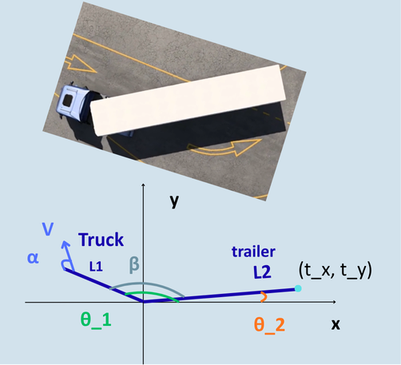
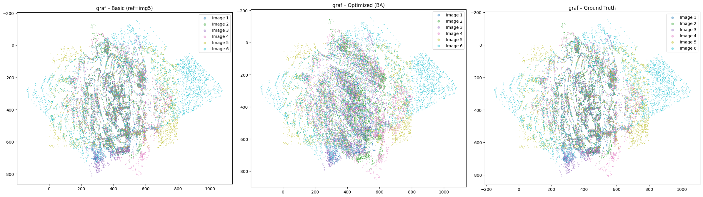
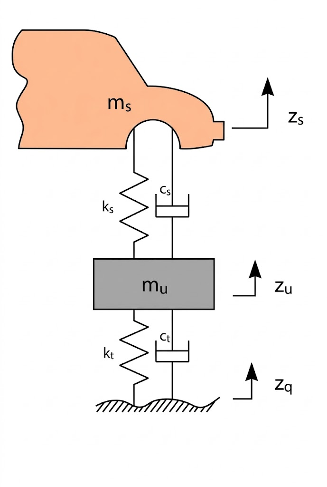
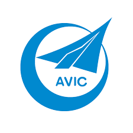
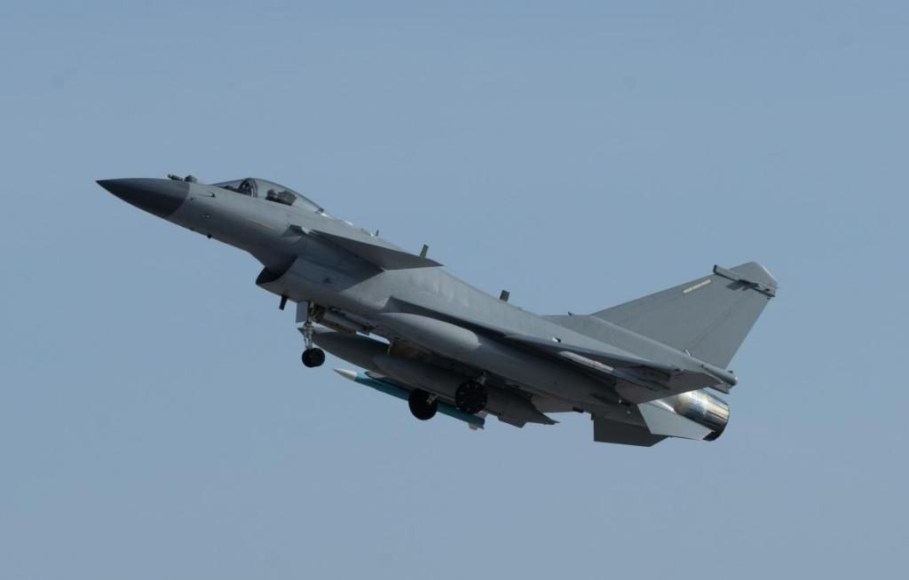
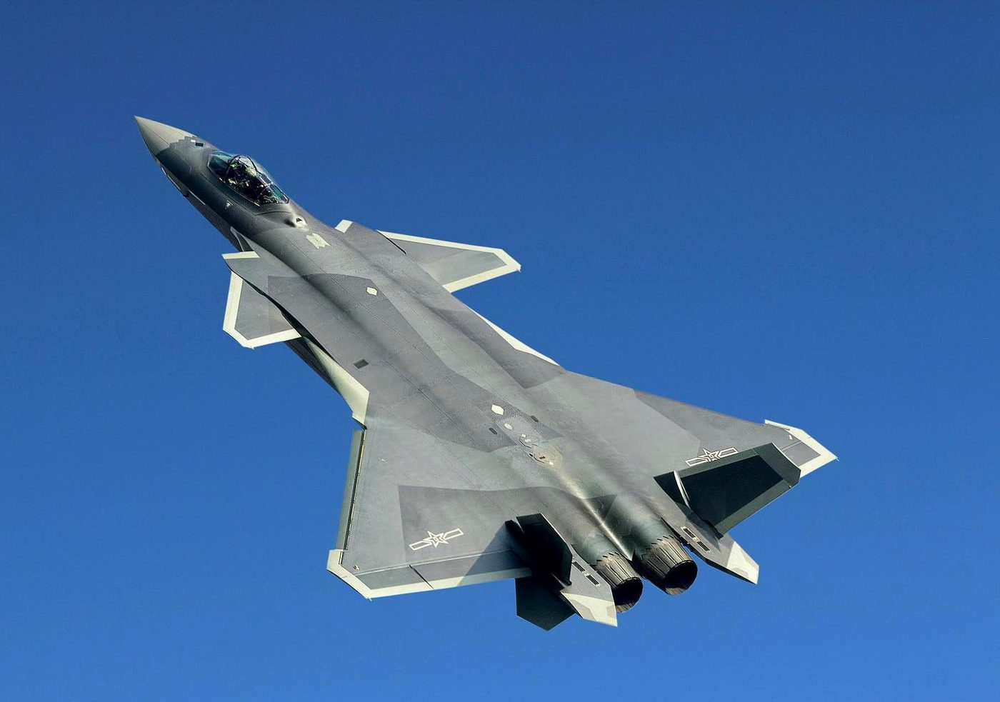
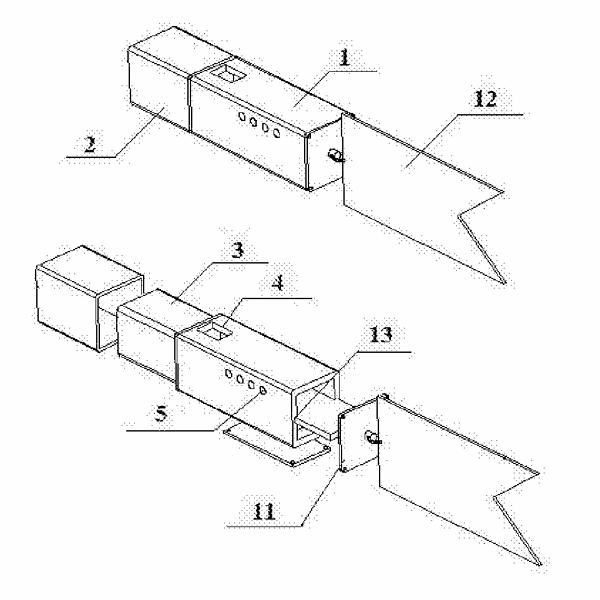
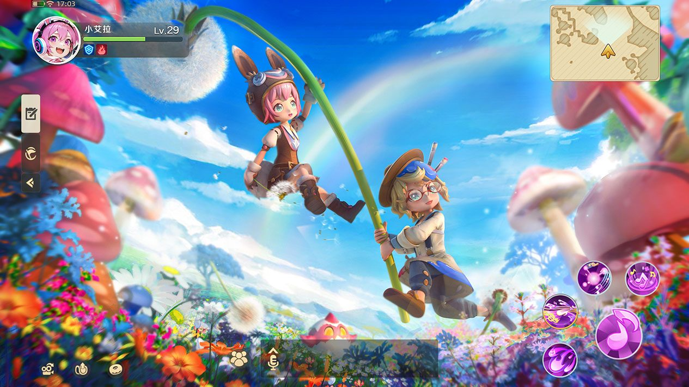

Complex systems integration and process engineering, from aircraft final assembly to live-service products
Vehicle dynamics modelling, control design, and data-driven analysis of real measurement data
Computer vision and algorithm development, from SfM pipelines to graph search with interactive UIs
Active and passive vehicle safety, driver behaviour field studies, and KPI-driven product iteration
Three projects demonstrating engineering depth across vehicle dynamics, perception, and data science.

Automatic path-following control for reversing an articulated truck, built in MATLAB/Simulink. State-feedback controller designed via pole placement with a discretized observer, validated on the full nonlinear model across trailer lengths and reversing speeds — precision reversing is a core manoeuvre-automation problem for autonomous freight operations.

SfM pipeline built from scratch in Python: SIFT features, normalized-DLT homography estimation inside RANSAC, incremental multi-image registration, and Gauss-Newton bundle adjustment over feature tracks — 2.13 px reprojection error on the wall benchmark. Foundations of visual SLAM in AV perception stacks.

Real IMU data collected on a Volvo 7900 Electric bus in Gothenburg, filtered and converted to a road-excitation PSD, then fed into a quarter-car model. Suspension stiffness and damping optimized to cut body-acceleration RMS while keeping deflection and tire force in bounds — fleet data to chassis tuning, end to end.
Field experiment with a LIDAR-instrumented bicycle (plus IMU, GPS, and cameras) measuring the minimum lateral clearance drivers leave when overtaking cyclists, and how oncoming traffic compresses it. Driver comfort-zone boundaries that ADAS intervention logic for vulnerable road users must respect.
Passive safety simulation study: how front-structure stiffness, impact speed, and vehicle mass shape the crash pulse, structural deformation, and energy conversion — and how restraint systems work within that envelope to limit occupant injury risk.
Complete series and parallel hybrid powertrains designed in MATLAB/QSS for a Class M reference vehicle: component sizing from top-speed and acceleration requirements, battery SoC management, and engine operating-point analysis over NEDC and a custom driving cycle.
Python application implementing Dijkstra's algorithm over a custom graph structure, with an interactive GUI that highlights the computed route on a map. Object-oriented design from the Chalmers Python OOP course — the core routing problem behind logistics and fleet optimisation.
BSc thesis at NUAA: structural design and implementation of a ring-orifice aerostatic air-bearing platform for spacecraft ground simulation. Theoretical load-capacity and stiffness analysis, CAD design, and a fabricated physical model with experiments — theory to working hardware.
Console-based grade management system in C++ from undergraduate course design: student records, file persistence, queries, sorting, and statistics behind a menu-driven interface — the starting point of a programming foundation later extended through Python and MATLAB.
Hands-on engineering across aerospace final assembly and large-scale live-service game systems — two industries, one discipline: complex systems under production constraints.



Production engineering in fighter-aircraft final assembly — coordinating mechanical, avionics, and quality domains across multi-stage integration under aerospace-grade precision requirements.

Portable weight-on-wheels switch inspection device — the landing-gear WOW switch gates flight-critical systems, and this tool made its final-assembly check fast and repeatable. Granted utility model (first inventor), with parallel invention application CN 201910201148.4.
Economy and progression rule systems, live-ops event planning, and KPI-driven iteration on player behaviour data — systems thinking at production scale, shipped to millions of players.

Aircraft Manufacturing Engineering, Nanjing University of Aeronautics and Astronautics. Thesis: structural design and implementation of a ring-orifice aerostatic air-bearing platform.
Vehicle safety, vehicle dynamics, electrification, and perception — Gothenburg, Sweden. Project work shown in Featured Work and Additional Projects above.
Open to master's thesis collaborations and graduate engineering opportunities in autonomous driving, electrification, and vehicle safety.